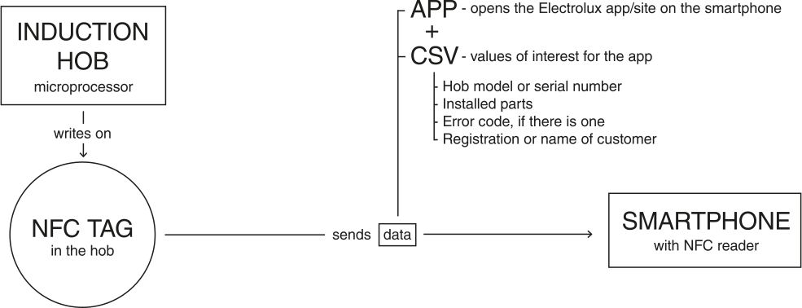

Client
Electrolux (Master Thesis)
Technologies
Figma, Adobe Illustrator & Adobe Photoshop
Role
Mobile UI/UX Designer
Plattform
Mobile web & native app (iOS/Android)
Year
Jan 2022 - Jun 2022 (6 months)
NOTE: This project was performed in the context of my Master Thesis, with my invaluable colleague Josefin Franzén, whom I mention in the corresponding sections.
Context
Electrolux AB is a Swedish company that, among other things, manufactures household appliances. As a leading multinational brand in several sectors, they are fully aware of the current problem regarding the repair of such appliances. It is a tedious, complicated and even dangerous process. I have developed my Master Thesis with the aim of designing the perfect self-repair experience for hobs. However, it is only one example of a repairable appliance that can be applied to any other product category. One of the pillars of our project was the ability to diagnose any faults in the hob by scanning an NFC tag that would open the official Electrolux website or native app on our phone’s browser. Within that app, the user could perform a series of actions to fix their appliance, upgrade it, or simply consult relevant information about it. In this project I intend to demonstrate my skills in human-centered and user experience design, showing as a result a prototype app.
Process
We decided to follow a process model called Double Diamond. Here, the first diamond represents the research phase, the second the design phase. We start with a problem statement to begin the research (diverge) where we gather as much data as possible, to continue converging and start defining our data. Then, we revise this data, to then start with the design phase. We start diverging again, developing many solutions, to end up converging into a delivery, in which we choose among the different proposals. This an iterative process that can have many adjacent diamonds, depending on when we want to stop.
Basic Principle
Although this web application has not been fully developed (at least for the moment), since it is not within the scope of the Master Thesis, the logic of the system has been thought out. The reading of the NFC tag by the phone consists in the transmission of a text string which triggers the opening of the Electrolux website or app. In addition to this, a series of data is sent for the mobile phone to know what to do: what is being scanned, is it broken, what parts are inside?
Product Autopsy
The product autopsy consists of the disassembly and analysis of the product to better understand its parts, how it works and have a starting point for its redesign. A visual analysis is perfomed to the proceed to disassemble it. It was investigated how each constituent part was made, who made it, what its specific purpose is and how well it has fulfilled its role in the overall function of the product.

Mockups
A CJM (Customer Journey Map) was designed and perfected throughout the various user tests to come up with the ultimate self-repair experience. Josefin and me tried to use both physical whiteboards and the collaborative tool Miro to synthesize our ideas. During this process, I made a series of mockups that would serve as the skeleton of the final app. It is worth mentioning that the design of the process and CJM was parallel to the design of the glass ceramic itself, in what would be a physical industrial design exercise.
Personas
Personas are fictional characters that are typically based on real-life observations of archetypal users specific objectives and needs. They represent groups of users within a targeted demographic who might use a particular product. For this project, three different kinds of personas were identified based on their approach to repair. The tinkerers are the most regular DIY-ers. They are used to repairing stuff and they are not stressed by the situation. The researchers have a more planned approach, and feel more stressed when something breaks, and the helpless are unlikely to have carried out repairs themselves and are the most stressed.
User Flow Diagram
The user flow diagram shows the path a user will take in an application to complete a task. In this case the diagram starts with the scanning of the NFC tag in the hob that triggers the opening of the app. It would continue with the main product view, with all the relevant info about it, and if there's anything wrong an error message would pop up. If the users decides to do something about it, it would show the instructions with the steps to solve the issue. Similar steps would be used to replace a part with the purpose of upgrading the hob even if it's not broken. The process is cyclical until the hob is working again.ll
User testing
We conducted a series of user narration exercises with the first iteration of the app and using the Figma prototyping tool to gather users’ insights and comments about it, possible issues and to know which items needed to be polished.
This exercise also helped us to improve our physical prototype, which Josefin and me tested along with the app with 10 different users. We tried to have a broad spectrum of technical and non-technical people, of different ages, genders and education. If we could make it work for the most helpless user, we could make it work for anybody.
Figma prototyping
These exercises helped us to modify the application accordingly. This page shows the different changes that were performed based on the feedback that we got. At this point, our idea was to design a native app for Android and iOS, since Electrolux is interested in their users downloading and using their app. However, using a universal kind of module like React Native would allow us to use it both as a webapp and as a native app. Both versions can be seen in sketches and renders indistinctly.

Result
This project is currently under development. With it I wanted to dig a little deeper into the UX field and show the development of a mobile application, to contrast a little with the previous, more technical project developed for another platform. I also think it is especially interesting to develop with cross-platform tools like React Native that allow us to be flexible about the final destination of our research.